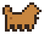
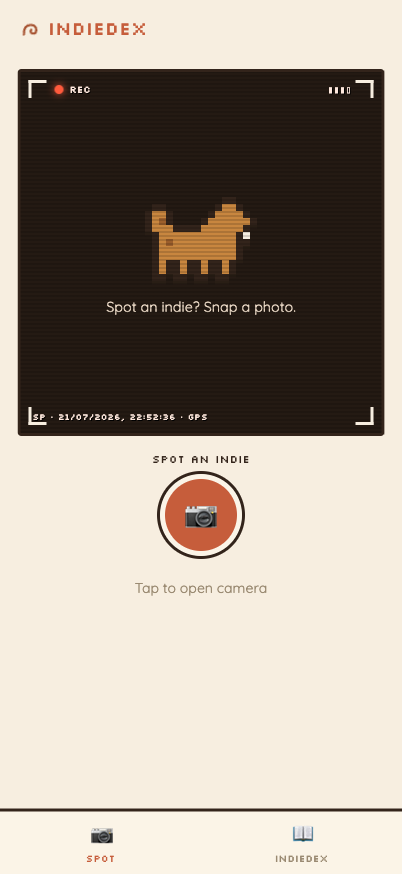
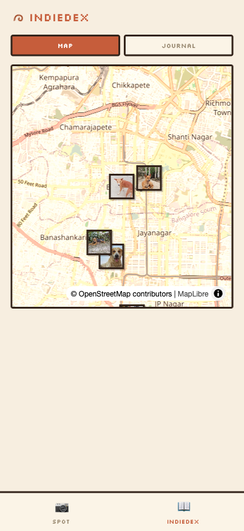
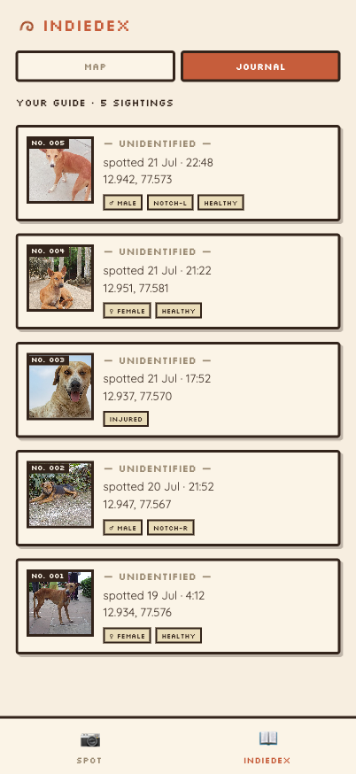

The App
snap a dog, and it's on the map
Someone on your street already knows the dogs on it — by sight, by habit, by name. The app is where that knowledge finally has somewhere to go. We call it the IndieDex.
It's a phone app, built for walking around. You photograph a dog, and it quietly notes where and when on its own. Over time that becomes a map of the dogs on your street, in your hand — the raw material the whole census is built from. One sighting at a time.




What it does today
Capture a dog
Tap the camera, take a photo. The app reads your location and the time by itself, so a sighting is really one tap. If you know more, you can add it — a quick note ("friendly", "limping", "sleeps by the shop"), and a few taps for sex, whether an ear's been notched (a sign it's been sterilised), and rough condition. All optional. No signal? It saves the sighting and syncs it when you're back online.
Your IndieDex
Everything you log shows up as pins on a map and a scrollable gallery of photos. Tap any one to see when and where you found it. Right now you see your own captures — a shared, neighbourhood-wide view is a later decision, not something we've rushed.
It lives on your phone
Add it to your home screen and it behaves like any other app — full screen, its own icon, no app store needed.
What's coming
This is the capture end, on purpose. The harder part — recognising the same dog across photos, so a sighting becomes a known individual with a name and a history — comes next, and the app is already built to hold it. After that: names and health records, and eventually a shared map a whole neighbourhood can build together. How it works → has the technical side.
How to get in
It's early. Right now the app is in a small private test in Bangalore, so there's no public link yet.
Getting in is simple when we open it up: we send you a link, you open it on your phone, and you're in — no password to remember, nothing to sign up for.
Want to be one of the first to map your street? Come say hello — tell us where you are and we'll get you set up.
Got an idea?
If you've used it and something's missing — or you just thought of something that'd help — tell us here. It goes straight to the people building it.